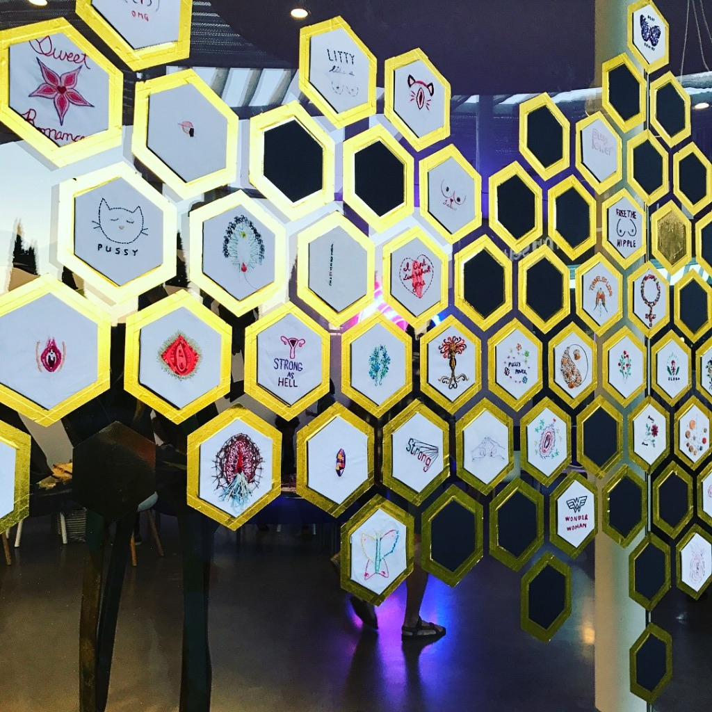

Cliteracy

Cliteracy is project of "The Cliterates," a collective of California-based
artists. With select installations, Cliteracy includes a wall-based installation,
public participatory activities and salon-style events. The artist team will
prepare and paint an entire wall with honeycomb outlines and then strategically
prompt a public, visual conversation with their own embroidered and stitched
hexagons of images and text.
-Glenda Drew's definition of Cliteracy
The entire exhibition could be seen outside of the Manetti Shrem Museum at UC Davis
over a weekend in October.
My contributions included a popular saying within the Cliterates "Pussy Power".
The ornamentation was done on an embroidery machine, and lettering handsewn. My second
piece was a more literal statement about femininity and the importance of sexual
health for females, but also an underlying message of how they are
are perceived during their menstrual cycles - something that doesn't defy the laws
of nature!